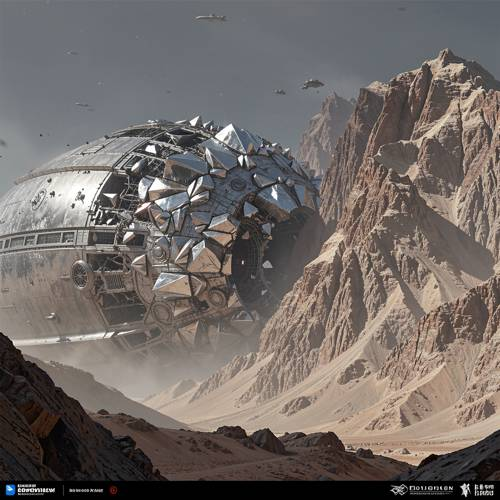
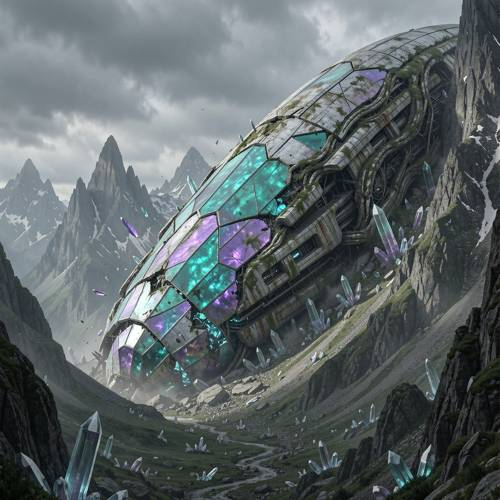
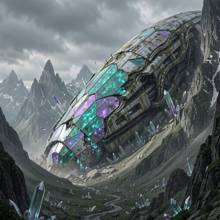

Relationship — The wreckage of a huge alien spacecraft, part of its hull made of exot
The wreckage of a huge alien spacecraft, part of its hull made of exotic metal crystals, and another part blended with ancient rocky mountains.

Direct — one call, no iteration

Continuum — Kimi K3 + FLUX.2-klein-9B
Judge — Direct
PASSRelationship - Composition — The image shows a massive, spherical alien spacecraft. A large, damaged section of its hull is clearly composed of numerous large, angular, faceted structures, distinct from the smoother, paneled parts of the hull.
PASSAttribute - Material — The spacecraft features large, sharp-edged, faceted structures that have a high sheen and reflect light, consistent with the appearance of metallic crystals. Their large scale and integration into a spacecraft hull give them an exotic quality.
FAILAction - Contact Interaction — The image shows the spacecraft has crashed in a rocky canyon and is positioned directly next to a mountain wall. However, the spacecraft and the rock are visually distinct entities. There is no depiction of the two materials blending, merging, or fusing together.
Judge — Continuum
PASSRelationship - Composition — A large section of the alien spacecraft's hull is visibly composed of numerous geometric panels, primarily pentagonal and hexagonal. These panels are translucent and glow with an internal light in shades of teal and purple, giving them a crystalline appearance.
PASSAttribute - Material — The image depicts exotic crystals in two forms: as the material for the glowing, geometric panels on the spacecraft's hull, and as large, individual, translucent crystals scattered across the valley floor and mountainside, with colors including teal and purple.
PASSAction - Contact Interaction — The wreckage of the spacecraft is shown lodged into the side of a steep, rocky mountain. The right side of the craft is pressed against and partially buried in the mountainside, indicating a significant impact where the structure of the ship and the mountain have become intertwined.
What the agent did
Thinking
The user wants an image of the wreckage of a huge alien spacecraft — part hull made of exotic metal crystals, another part blended with ancient rocky mountains. Generate with flux2-klein per benchmark policy.
Model
I'll generate this scene — a massive alien wreck, crystalline metal hull, fused into ancient mountain rock.
Step 1 — `generate_image`
{
"model": "flux2-klein",
"prompt": "The wreckage of a colossal alien spacecraft crashed into a mountain range. One section of its enormous hull is made of exotic translucent metal crystals \u2014 faceted iridescent crystalline panels in teal, violet and silver, some shattered and glowing faintly from within. Another section of the hull is seamlessly blended and fused with the ancient rocky mountainside, as if the ship and the stone have grown into one over millennia, rock strata wrapping around corroded alien plating, moss and weathering. Vast scale, jagged peaks, broken spires of crystal, scattered debris field in a valley below, overcast dramatic sky with low clouds, cinematic wide shot, photorealistic sci-fi concept art, moody atmospheric lighting."
}
Result img_0

Thinking
The image is actually very good: huge alien spacecraft wreckage, crystalline hull panels (teal/violet), right side blends into the mountain cliff with weathered plating and rock. Scale is conveyed, crystals scattered around. This matches the prompt well. Mark best and stop.
Step 2 — `mark_best`
{
"image": "img_0",
"reason": "Matches all prompt elements: colossal wrecked alien spacecraft, hull sections of iridescent teal/violet crystal-metal panels, right side visibly fused and weathered into the rocky mountainside, debris and crystals scattered through the valley, dramatic moody scale. No defects to fix."
}
Model
The first generation came out strong, so I've marked it as the final result. It includes everything you asked for: - **Huge scale** — the spacecraft towers across the valley, dwarfing the surrounding peaks, with drifting debris emphasizing its size - **Exotic metal-crystal hull** — large faceted panels in iridescent teal, violet, and silver, some shattered, with crystal growths scattered across the valley floor below - **Fused with the ancient mountains** — the right side of the hull is weathered, moss-covered, and visibly blended into the rocky cliff face, as if ship and stone have merged over millennia The moody overcast sky and mist give it the ancient, long-crashed atmosphere. No further edits needed — good enough is a stop condition.